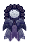
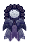
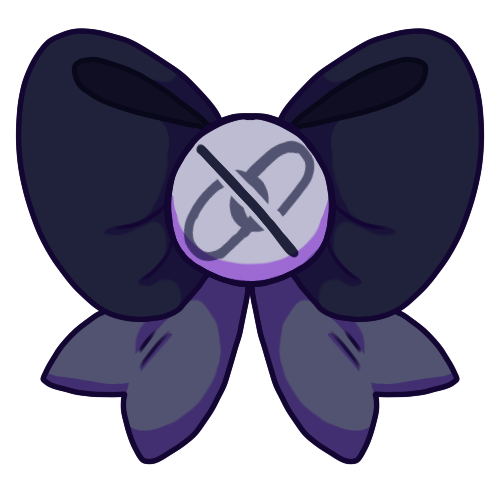
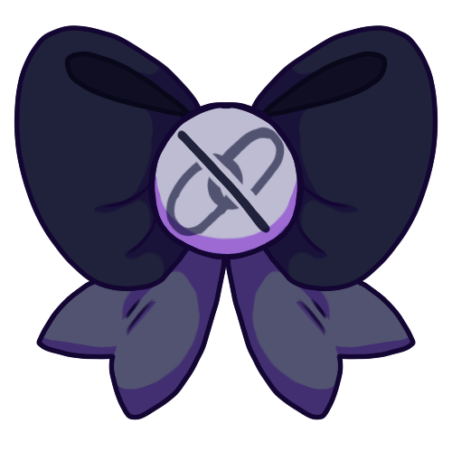

meow meow man
Raiden stands at 5'9", with a permanent resting bitch face to most people who will come to meet him. Although abrasive, to the point, and blunt with most people, at his heart there is still some warmth reserved for those close to him. Otherwise kind of odd, though in truth, it is a defense mechanism from his own past.


meow meow man
Raiden stands at 5'9", with a permanent resting bitch face to most people who will come to meet him. Although abrasive, to the point, and blunt with most people, at his heart there is still some warmth reserved for those close to him. Otherwise kind of odd, though in truth, it is a defense mechanism from his own past.

Character
Likes
- cats
- reading
- late night hours
- sweets
Dislikes
- technology
- social events
- loud places
- narcoleptic episodes
Personality
- stoic, kinda comes off like an asshole to strangers or disinterested—but if you know him, you'd know he's just a meme who likes to joke and just has grey morals.
- somewhat withdrawn and heavily keeps to himself; the type to more often just throw in quips during conversations.
- will not beat around the bush and will be blunt as hell.
- not very technologically advanced, it took hideki at least 3 years to convince him to drop his nokia brick to get something more modern.
- scarily intelligent and observant, he seems to know a lot of unusual and odd things you wouldn't expect of him to know.
- enjoys new knowledge and weird facts.
- he will hug all the cats and you can't stop him.
Raiden has a rather severe form of Bipolar Disorder, often making his moods rather unpredictable. He can be easily triggered by things that happen in every day life, but this is controlled by the medicine he takes for the most part.
Stoic and rather introverted, Raiden tends to keep to himself for the most part. Emotion is hard to draw out of him unless you spend more than a few minutes with him. He is hard to get to know, simply because of the harsh emotional walls he tries to keep up. He can also be rather blunt, speaking openly and without any care that he may hurt another’s feelings.
He is more relaxed around the people he has gotten close to or is comfortable with–seen joking around and teasing them. He also happens to be more gentle like this, though his blunt nature still shows through. His trust is hard to gain, but easy to break.
Raiden’s rough exterior hides how truly intelligent he is. He is quick to assess situations and find a perfect outcome for them. He is an experienced liar and conman from his past job as a thief, but he tries to avoid doing that now.
Story
... this needs rewriting as well due to it being my friend's old history for him.
Raiden was the eldest of a set of identical twins, his mother being born and from France and having a Japanese father. The family lived in France until the twins were about seven, their parents divorcing for reasons unknown to them. The two boys were then taken to Japan with their father, never hearing from their mother again.
Raiden and his twin brother had a strange life growing up due to their father’s profession. Their father was an infamous thief, extremely skilled in his job. He quickly taught the boys their skill, delighted at how they were actually better than him.
When Raiden was about ten, he met a girl named Saki Himura while escaping the police with his twin. He continued to run into the girl, eventually befriending her. The three grew close quickly, spending much of their time together when the twins weren’t doing their job of stealing.
Tragedy struck when the twins were just eleven. Their father took them along on another job. The job went entirely wrong due to the fact Saki had somehow followed them. Raiden dove into protect her, his twin being killed as he couldn’t protect both of them.
Raiden grew to hate his father for this, taking up his French mother’s last name instead of his father’s Japanese one. He detached himself from the man and became an “orphan.” He continued to remain close to Saki, though he wasn’t as open with her anymore.
After the death of his twin, that was when his Fullbringer abilities began to show. He trained himself to control his abilities, though he still struggles with them sometimes to this day.
Moodboard
Design Notes
Design Notes
Raiden is extremely lean, built more like a runner than anything else. He is not extremely muscular, but he does have some muscle to him. He has messy black hair that sticks up in random places, almost always hanging in his face. He has central heterochromia in his left eye–the pale grey disrupted by a bright hazel ring extending from his pupil. His right is the same pale grey color, but lacking that pop of color in it. Scars riddle his knuckles, forearms, and on his legs–even more scars hidden beneath his clothing.
Trivia
- He's technically an OC written by a friend, but because she's basically dropped writing him and because I was writing his husband, I kinda ended up adopting him and continuing to write and create content for him. So a lot of his history is rooted in her creation and development, but I basically carried it on.
- He is a bendy straw; aka he's eerily flexible. He likes sitting in weird, uncomfortable positions because to him they are comfortable to his joints.
- He likes doing parkour as a hobby and things he enjoys.
- His abilities manifest in shadows; he can hide himself in the shadows of people and move through it.
- He used to work as a sheet metal worker for years, though firefighting offers the adrenaline and activity for his brain.
- His last name used to be Lemarchal, though he took on Hideki's last name.
- Allergic to dogs, though not to cats.
- He does smoke to de-stress, though thankfully it's been a lot lesser in the last years.


 


 



{kind=link}
{kind=link}
{kind=link}
{kind=link}
{kind=link}